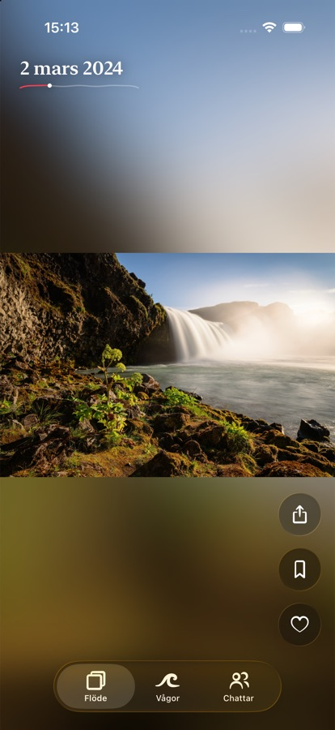
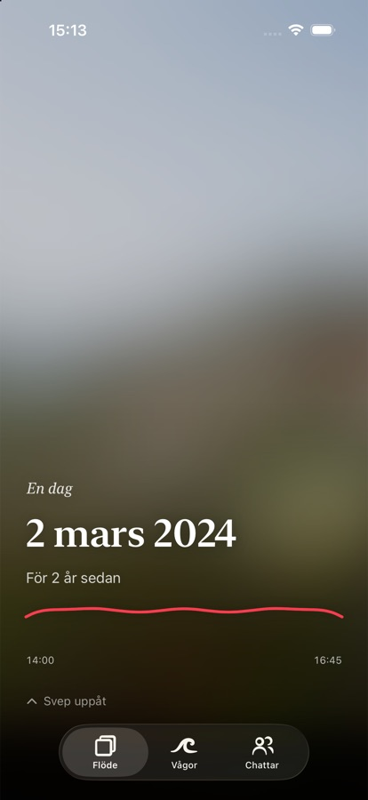

Dina minnen,
en våg i taget.
Swell visar din kamerarulle som ett flöde du skrollar igenom. Då och då sköljer en våg över dig: en dag, en resa eller en sommar, samlad och berättad från början till slut.


Så fungerar det
- Ett flöde av dina egna bilderGamla och nya ögonblick blandas, så att du hittar sådant du glömt bort. Swell lär sig vad du tycker om ju mer du tittar.
- VågorBilder som hör ihop samlas till en våg. Den röda tråden visar hur dagen eller resan gick, och var du är i den.
- Privat från börjanDina bilder stannar på telefonen. Ingen reklam, ingen spårning och inga följare.
- Dela med de du väljerSkicka ett ögonblick eller en hel våg till en vän eller en grupp. Det som skickas försvinner efter 30 dagar.